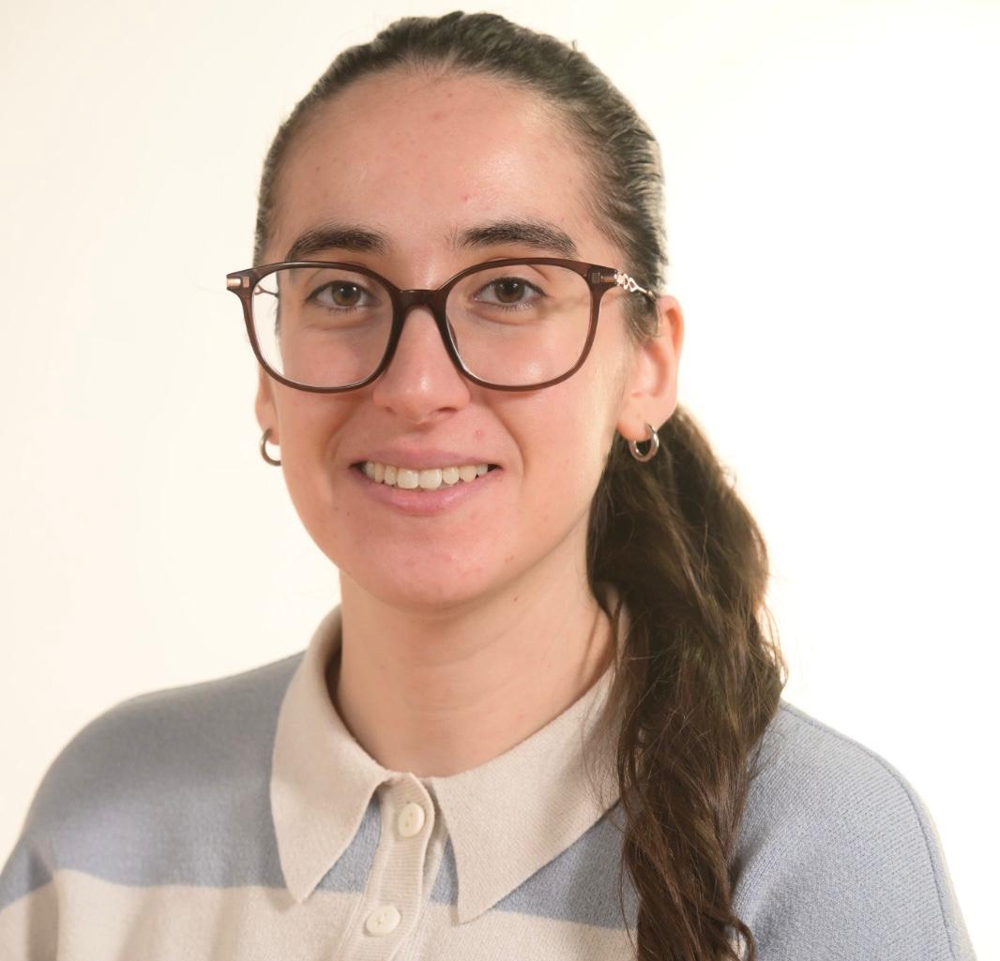

SAIDANI
Thaseda
Étudiante en Master 2 Informatique, parcours Big Data (Université Paris 8). Passionnée par le traitement de données massives, l'IA et le développement Cloud/Full-Stack.

Thaseda SAIDANI
Juvisy-sur-Orge (91)
Profil Professionnel
Titulaire d'un premier Master en Ingénierie des Systèmes d'Information (reconnu niveau 7 ENIC-NARIC) et actuellement en M2 Big Data à l'Université Paris 8, je combine de solides compétences en développement logiciel et en gestion d'architectures cloud (Docker, Kubernetes) avec des expertises avancées en traitement de données et apprentissage automatique. Je recherche un stage de fin d'études de 6 mois pour contribuer à des projets innovants à forte valeur ajoutée.
Expériences Professionnelles
Développeuse Web — Bénévolat
Association ATEEVA (À distance)
- Participation au développement d'un site web applicatif (CMS Wagtail) et d'une interface de rédaction d'articles.
Développeuse Back-End — Volontaire
AriMayi (À distance)
- Développement back-end avec PHP (Laravel) et gestion de bases de données MySQL.
- Modélisation du système d'information avec UML et BPMN, en équipe Agile Scrum.
Stagiaire — Architecture Cloud Hybride & Sécurité (PFE)
Université Mouloud Mammeri (Algérie)
- Développement d'APIs REST en Python (Flask) pour les échanges de données.
- Mise en place d'une base NoSQL répliquée et conteneurisation des services avec Docker et Kubernetes.
Compétences Techniques
Big Data & Données
Apprentissage automatique, fouille de données, IA générative, indexation de données massives, algorithmes distribués, MongoDB, MySQL.
Programmation & Web
Python, Flask, APIs REST, PHP (Laravel), React.js, JavaScript, SQL.
Cloud & DevOps
Docker, Kubernetes (notions), Linux (Ubuntu), Git, GitHub, GitLab, Postman.
Méthodes & Conception
Agile Scrum, UML, BPMN, Trello, Figma.
Projets & Engagements
Messagerie Sécurisée (Master 1)
Architecture modulaire, développement d'APIs REST, interface front-end avec React.js et gestion de version Git.
Association SAWA — Bénévolat
Implication dans la logistique, la coordination de la distribution d'urgence et l'aide humanitaire.
Contactez-moi
Je suis activement à la recherche d'un stage de fin d'études de 6 mois. Discutons de vos opportunités !
Basée à Juvisy-sur-Orge (91260)
Mobilité : Île-de-France & Télétravail